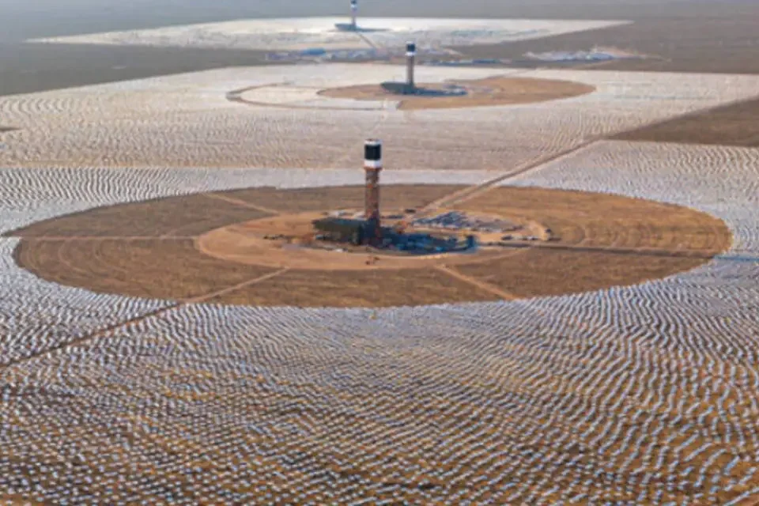
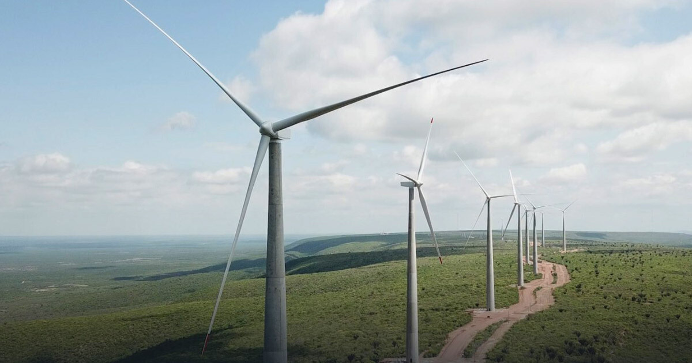
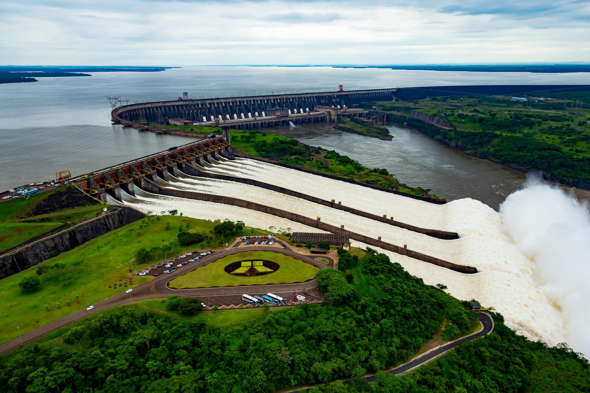
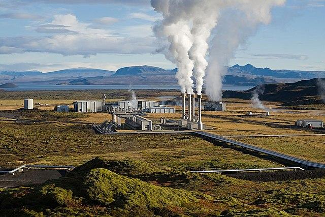
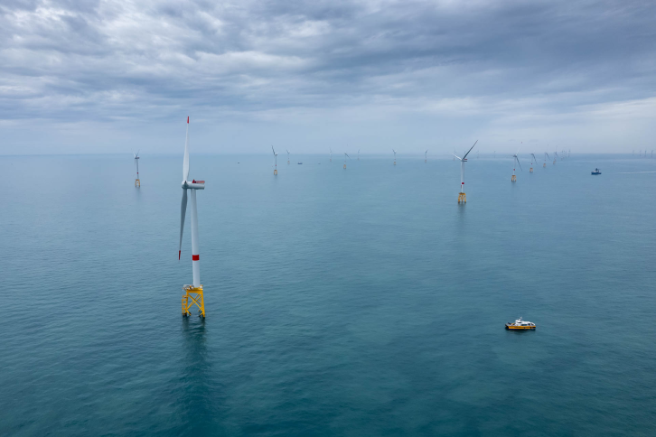

O que são Energias Renováveis?
Energia renovável é obtida de fontes naturais como Sol, vento, água e biomassa. Essas fontes se renovam continuamente e emitem menos poluentes.
Fontes de Energia Renovável:
- Solar;
- Eólica;
- Hídrica;
- Biomassa;
- Geotérmica;
- Oceânica;
Vantagens:
- Redução da poluição;
- Independência de combustíveis fósseis;
- Criação de empregos;
- Energia inesgotável;
- Baixo risco ambiental;
Uso no Brasil:
A matriz elétrica brasileira é majoritariamente renovável, liderada pela energia hídrica.
Impacto Ambiental:
Fontes renováveis causam menos impactos e ajudam a conter as mudanças climáticas.
Futuro da Energia:
A transição energética é essencial para combater o aquecimento global.
Novas Tecnologias para Geração de Energia
Avanços como painéis de perovskita, turbinas offshore e pequenas centrais hidrelétricas impulsionam a energia limpa.
Fontes como marés, geotérmica e biomassa também ganham espaço na matriz energética.
Armazenamento e Distribuição em Larga Escala
Baterias, hidrogênio verde e smart grids tornam o uso de energia renovável mais eficiente e viável.
Otimização de Sistemas e Redução de Impacto Ambiental
IA otimiza o consumo e manutenção. Materiais recicláveis e políticas públicas ajudam na sustentabilidade.
Locais Icônicos de Geração de Energias Renováveis
Energia Solar - Ivanpah (EUA)
Grande usina solar no deserto de Mojave, com 300.000 espelhos.
Energia Eólica - Lagoa dos Ventos (Brasil)
Maior parque eólico da América do Sul, no Piauí.
Energia Hidrelétrica - Usina de Itaipu
Entre Brasil e Paraguai, uma das maiores usinas hidrelétricas do mundo.
Energia Geotérmica - Poço Fushen-1 (China)
Poço profundo com grande potencial energético descoberto pela Sinopec.
Energia Oceânica - Saint-Brieuc (França)
Parque offshore capaz de abastecer 1 milhão de pessoas.
